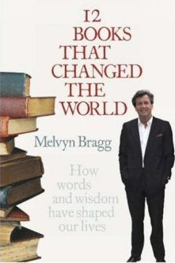

12 Books That Changed The World

by Melvyn Bragg, 2006. On Amazon.co.uk.
A brilliant assembly of potted snippets of history, ideal for someone like myself with scarcely a glimmer of an education. By cunning omission of the definite article, Bragg gets to talk not just about 12 important books, but is able to manipulate the list such that it is all about 12 British books, a move I heartily approve of. Apparently written to accompany some television series, I neither knew nor cared. For the record, his selection is below:
- Principia Mathematica by Isaac Newton, 1687. "Will always have a pre-eminance above all the other works of human genius."
- Married Love by Marie Stopes, 1918. Transformed the married lives of a whole generation, furthering the rights of women, and making it possible to broach subjects that had been entirely taboo.
- Magna Carta by Members of the English ruling classes, 1215. The fundamental origins of the English constitution, setting up a balance of powers which forms the basis and language for many others since, including America and India.
- The Rule Book of Association Football by a group of former English public school men. Codifying the most popular game on the planet.
- On the Origin of Species by Charles Darwin, 1859. The greatest and most far-reaching scientific theory yet produced.
- On the Abolition of the Slave Trade an oration by William Wilberforce in Parliament, 1789. This was published immediately after his oration in parliament, forming a cornerstone of the anti-slave trade movement, and eventually leading to the abolition of the slave trade just days before Wilberforce's death, a move that, in subsequent decades, was emulated by nations all over the world.
- A Vindication of the Rights of Women by Mary Wollsenstonecraft, 1792. The first great feminine thesis, coming at a time when the world sorely needed it.
- Experimental Researches in Electricity by Michael Faraday, 1839-55. A study in dedication and impartial perseverance, resulting in an astonishing number of discoveries which now affect the everyday lives of billions.
- Patent Specification for Arkwright's Spinning Machine by Richard Arkwright, 1769. Trailblazer for a commerce-fuelled industrial revolution that shows no signs of slowing down in its transformation of the world.
- The King James Bible by fifty-four scholars appointed by the King, 1611. A beautiful construction that has contributed more phrases and expressions to the English language than any other source.
- An Inquiry into the Nature and Causes of the Wealth of Nations by Adam Smith, 1776. Transformed views of how wealth was to be measured and generated, practically inventing capitalism along the way.
- The First Folio by William Shakespeare, 1623. No other work of fiction, religious texts aside, can match the cultural influence and endearing effect on our language that this body of work has had.
Rating:
9/10 if you know nothing, like what I do.
5/10 if you've already read all the entries in his list, like I haven't.
Comments
Comments powered by Disqus